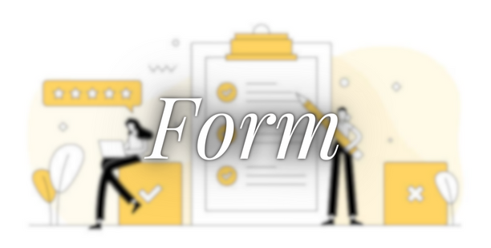

<ion-header collapse="condense">
  <ion-toolbar>
    <ion-title class="custom-title" size="large">Self Care</ion-title>
  </ion-toolbar>
</ion-header>

<ion-content>

    <div class="image-container">
      <div (click)="navigateToPage1()">
        
      </div>
      <div (click)="navigateToPage2()">
        
      </div>
      <div (click)="navigateToPage3()">
        
      </div>
    </div>
  
</ion-content>


